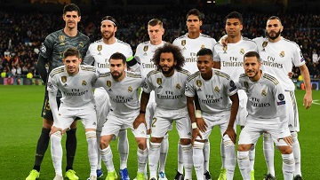
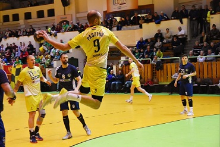

Hobbim
Legfőbb hobbim a sport követése illetve űzése. Kedvenc sportom a labdarúgás, de szeretek számos másik sportágat is.

A kedvenc csapatom a Real Madrid, elég nagy fannak tartom magam. Szinte mindent tudok szeretett csapatomról.
Sajnos a jelenlegi helyzetben nem tudok élő mérkőzéseket nézni, ezért maradt a régebbi meccsek visszanézése.
Nagy álmom, hogy egyszer kijussak Madridba és élőben nézhessek végig egy mérkőzést.

Szülővárosomban, Orosházán amikor lehetőségem van élőben nézem az NBI-es élvonalbeli férfi kézilabda csapat meccseit.
Itt áttudom élni, hogy milyen is egy parázs hangulatú mérkőzés a helyszínen és nem a tv-n keresztül.
Remek kikapcsolódás és családi program egyaránt.
 Másik hobbim a túrázás.
Másik hobbim a túrázás.
2018 nyarán székelyföldön megmásztam az 1608 méter magas Egyes-követ.
Túránk elején egy nyári zápornak köszönhetően jól eláztunk, de ez csak izgalmasabbá tette a túránkat.
Mikor felértünk a csúcsra gyönyörű látvány tárult elénk, és akkor megbizonyosodtunk arról, hogy megérte a sok fáradalmat a túra.